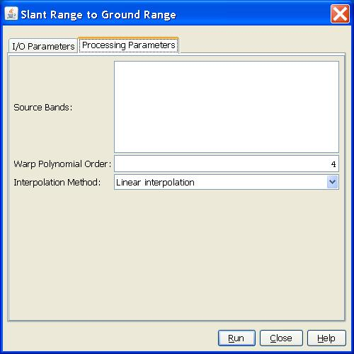

Slant Range to Ground Range Operator
The operator re-projects images from slant range (range spacing
proportional to echo delay) to ground range (range spacing proportional
to distance from nadir along a predetermined ellipsoid). The operator
works on complex or real slant range product.
Note: The SRGR operator is not required before terrain correcting since terrain corrected results are always in
ground range.
Major Processing Steps
The slant range to ground range conversion consists of the
following major steps:
- Create a warp polynomial of given order that maps ground range pixels to slant range pixels.
- For each ground range pixel, compute its corresponding pixel position in the slant range image using warp
polynomial.
- Compute pixel value using user selected interpolation method.
Interpolation Methods Supported
The operator supports the following interpolation methods:
- Nearest-Neighbour interpolation
- linear interpolation
- Cubic interpolation
- Cubic2 interpolation
- Sinc interpolation
Parameters Used
The following parameters are used by the operator:
- Source Band: All bands (real or virtual) of the source product. User can
select one or more bands for producing ground range images. If no bands are
selected, then by default all bands are selected.
- Warp Polynomial Order: The degree of WARP polynomial. Values 1, 2, 3 or 4; default 4.
- Interpolation Method: User can select interpolation method used in SRGR conversion.

References
- Curlander, J.C., McDonough, R.N. (1991). Synthetic Aperture Radar: Systems and Signal Processing. Wiley, New York. ISBN 978-0-471-85770-9
Processing parameters (reference)
GPT operator: SRGR. Generated from the operator source; parameter names are those used in GPT and graph XML.
| Parameter | Type | Default | Allowed values | Unit | Description |
|---|
sourceBands | String[] | | | | The list of source bands. |
warpPolynomialOrder | int | 4 | 1, 2, 3, 4 | | The order of WARP polynomial function |
interpolationMethod | String | Linear interpolation | Nearest-neighbor interpolation, Linear interpolation, Cubic interpolation, Cubic2 interpolation, Sinc interpolation | | Interpolation Method |
Background
Prerequisites
- A SAR product that is not map projected, not a TOPS burst product, with an incidence angle tie-point grid, and not already converted to ground range
Next step